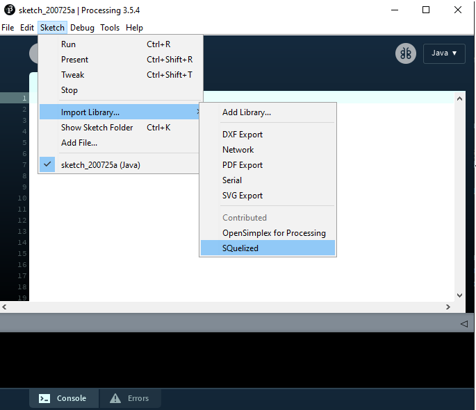

Given the fact that Processing its meant mainly for students and people learning programming, we have done our best to make the library and documentation as simple and straight-forward as possible to ease you into your learning journey.
We believe in open source and giving back to the community. That is why this project is and will always be available for free as an open source project, and you are free to fork it, contribute to it, or report bugs and wanted features. We will do our best to maintain it!
SQuelized is made with the aim of avoiding complicated and ugly code in your Processing sketches, making your sketches readable and maintanable.
Download the SQuelized library files into your computer.
Unzip and put the extracted SQuelized folder into the libraries folder of your Processing sketches.
In a Windows System, it
is usually found in C:\Users\User\Documents\Processing\libraries
To verify that the installation was done correctly, open your latest version of Processing PDE. Under the menu Sketch, select Import Library and check that SQuelized appears on the list. If it does, then everything was done correctly. If it doesn't, then you probably did not copy the files to the correct folder. Check the steps above.
Import the library into your sketch. To do this, either use the above-mentioned menu to import the library by clicking on SQuelized or manually import it by adding the corresponding import statement.
Now you are finally ready to connect to a database! To establish a connection to a local MySQL server, instantiate a MySQLConnection object with the proper parameters. Use this SQLConnection object to communicate with your database through queries and other predefined methods. Learn more by reading the documentation and the reference. Happy coding!